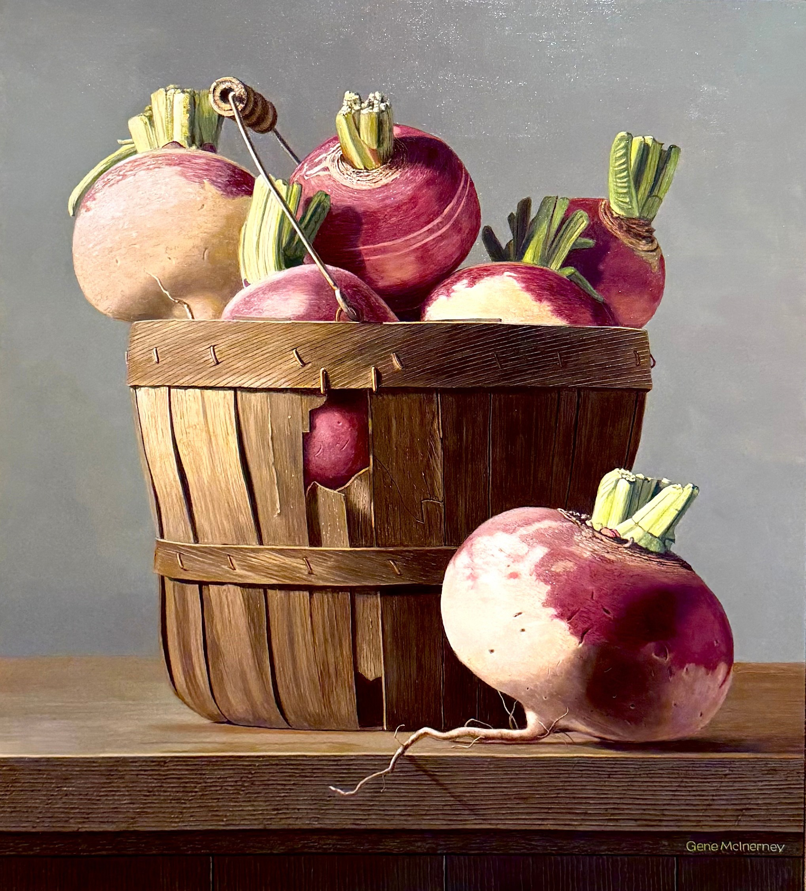

AMBLESIDE ARTIST
Gene McInerney
Oil · Acrylic · Watercolor · Hyper-Realism

FEATURED WORK
Basket of Turnips
Gene McInerney
OIL ON PANEL · 20" × 18"
$4,800
An intimate study of an ordinary subject, rendered with extraordinary precision. McInerney's careful observation transforms the familiar into something quietly contemplative.
THE ARTIST
The poetry
of ordinary
places.
Gene McInerney was a primarily self-taught artist whose oil, acrylic and watercolor paintings earned national recognition.
Working from the farmlands of eastern Pennsylvania, he found his subjects in the people, places and objects of everyday life.
His work reflects a lifelong commitment to portraying familiar surroundings in new ways, often carrying a nostalgic mood and a poignant sense of the past.
McInerney described his style as hyper-realism, though the precision of his surfaces was always balanced by warmth, atmosphere and emotional restraint.
THE WORK
Quiet places, precisely observed.
PROCESS
Layer by
layer,
stillness.
McInerney built his paintings through multiple layers and carefully controlled color, creating jewel-like surfaces with extraordinary detail.
His technique combined alkyd and oil, allowing him to develop delicately rendered textures without sacrificing clarity or luminosity.
Despite their precision, the paintings avoid stiffness. Their carefully constructed surfaces carry a quiet, contemplative quality.
The result is work that invites prolonged looking rather than spectacle.
SUBJECT
A sense
of what
remains.
Farms, buildings, roads and rural objects became recurring subjects in McInerney's work.
Rather than treating them simply as documentary subjects, he used them to create images filled with memory, silence and a sense of place.
His paintings often feel removed from ordinary time — familiar enough to recognize, but composed with enough precision and stillness to become something almost meditative.
SELECTED WORKS
The Collection
RECOGNITION
Selected Honors
Selected as one of 30 winners from approximately 6,000 entries in the magazine's Annual International Competition.
Featured in a profile describing McInerney as the “Delicate Engineer.”
Award recipient from the National Society of Painters in Casein & Acrylic.
Award recipient and exhibiting artist.
Award recipient in national juried exhibition.
EXHIBITIONS
Selected Venues
Uptown Gallery · Salmagundi Club
The Snow Goose Gallery · East Stroudsburg University · Art of the State · Allentown Art Museum
Capricorn Galleries
Art Association of Harrisburg International Exhibition
LEGACY
Sixty years
of careful
looking.
McInerney painted for approximately six decades, building a body of work recognized for technical precision and emotional restraint.
His paintings have been widely exhibited and collected throughout the United States.
Gene McInerney died on February 14, 2018. His work continues to preserve the places and atmosphere that shaped his artistic life.
COLLECT